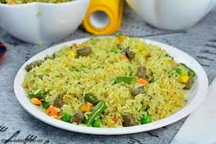

Friedrice

Description
Fried rice is a quick and flavorful dish made by stir-frying cooked rice with vegetables, eggs, and your choice of meat or tofu. Seasoned with soy sauce, it’s a versatile meal that can be customized to your taste.
Ingredients
- 2 cups cooked rice (preferably day-old)
- 2 tablespoons oil (vegetable or sesame oil)
- 2 eggs (beaten)
- 1 cup mixed vegetables (carrots, peas, bell peppers, etc.)
- 1/2 cup cooked protein (chicken, shrimp, or tofu)
- 2 tablespoons soy sauce
- 1 clove garlic (minced)
- 1 small onion (chopped)
- 2 green onions (chopped, for garnish)
- Salt and pepper (to taste)
Preparations
- Prepare the rice: Use leftover rice or cook fresh rice and let it cool completely.
- Scramble the eggs: Heat 1 tablespoon of oil in a pan or wok over medium heat. Add the beaten eggs, scramble them until cooked, then set them aside.
- Cook the vegetables and protein: In the same pan, add another tablespoon of oil. Sauté the garlic and onion until fragrant, then add your mixed vegetables and cook until tender. Add the cooked protein (chicken, shrimp, or tofu) and stir everything together.
- Fry the rice: Add the cooked rice to the pan and stir to combine with the vegetables and protein. Pour in the soy sauce and stir-fry everything for a few minutes, making sure the rice is evenly coated.
- Finish the dish: Stir in the scrambled eggs, mix well, and adjust seasoning with salt, pepper, or extra soy sauce if needed. Garnish with chopped green onions.
- Serve: Enjoy your fried rice hot! Optional: Drizzle with sesame oil for extra flavor.